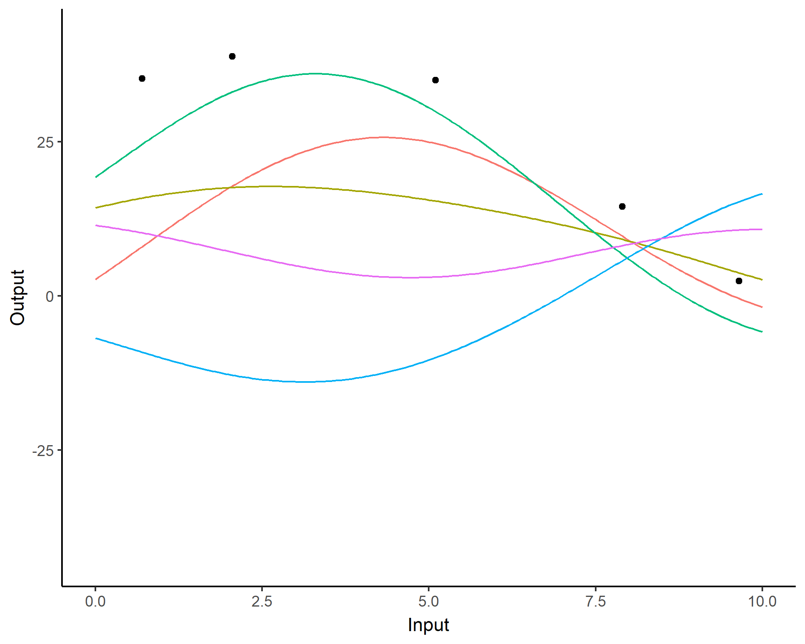
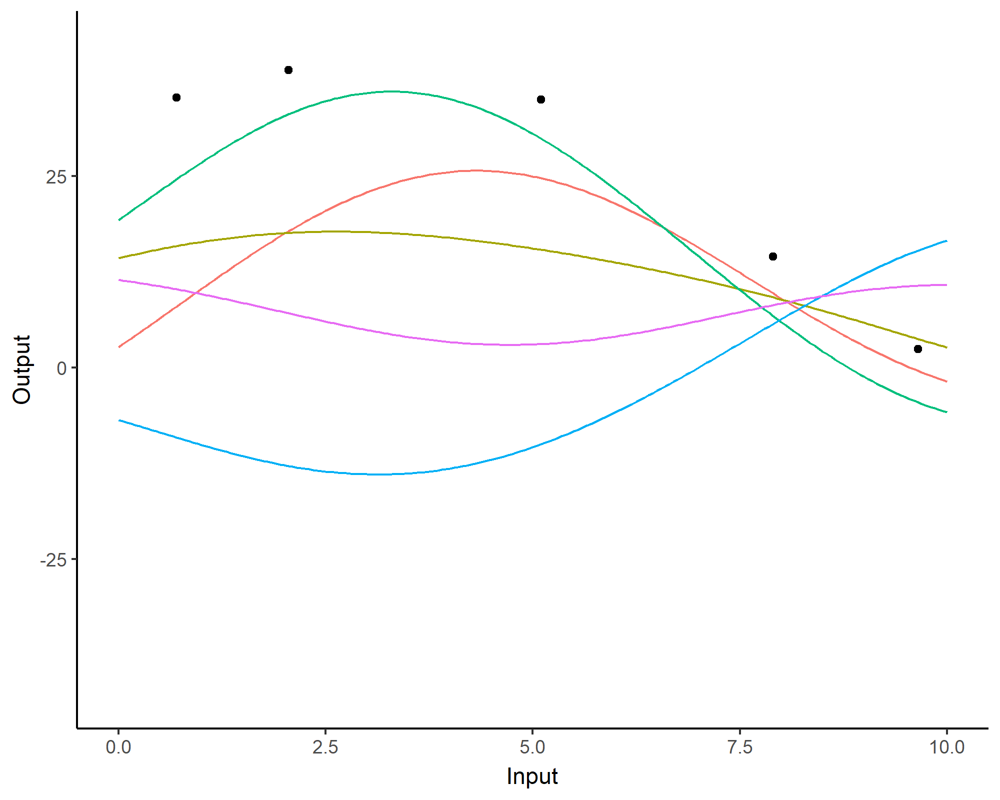
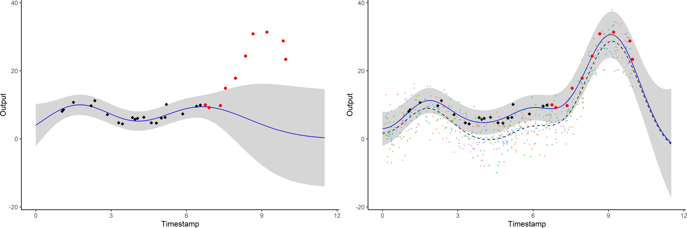
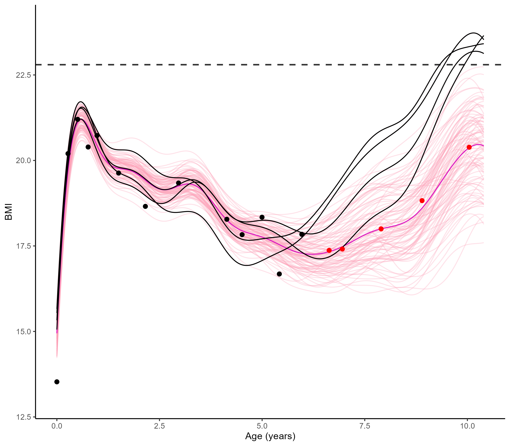
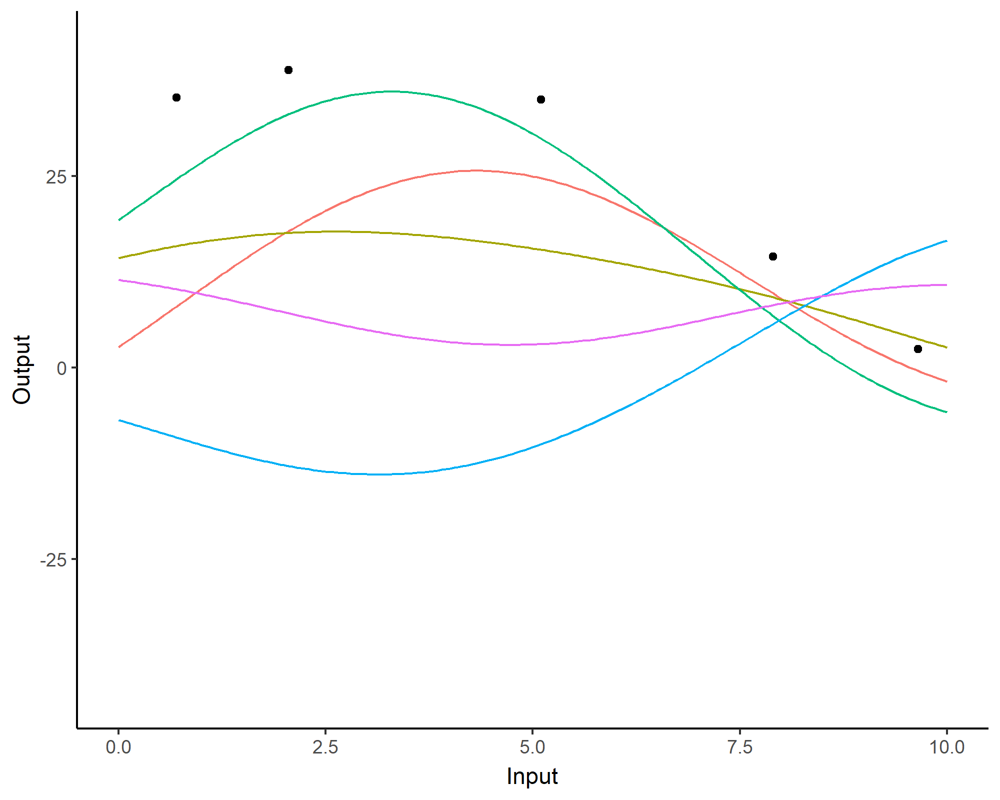
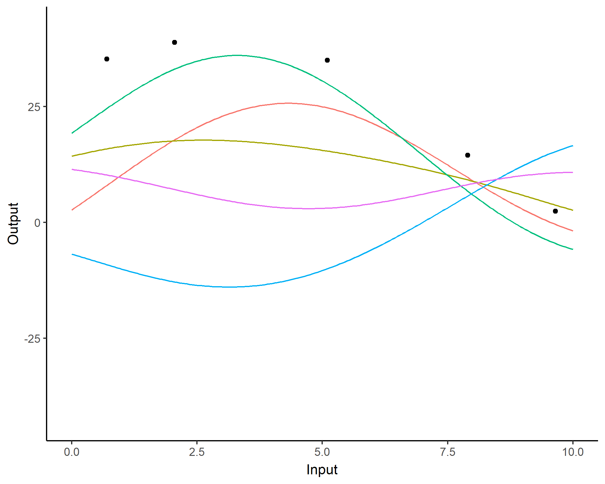

Analyse de données fonctionnelles pour des problématiques sportives :
spécificités, approches classiques et probabilistes
Arthur Leroy - Department of
Computer Science, The University of Manchester

Séminaire ENSAI - 11/01/2024
Can you spot the differences?

Can you spot the differences?
Functional data is all about smoothness and tidiness


Functional data is all about smoothness and tidiness

Functional data in sports ? Time, space and continua

Functional data in sports ? Time, space and continua
- Irregular time series (in number of
observations and location),
Functional data in sports ? Time, space and continua

- Irregular time series (in number of
observations and location),
- A few observations per swimmer,
Functional data in sports ? Time, space and continua
- Irregular time series (in number of
observations and location),
- A few observations per swimmer,
- Many different swimmers per
category.
Reconstructing functions from series of points
A function can be expressed as a linear combination of basis
functions:
\[f(t) = \sum\limits_{b=1}^{B}{\alpha_b \
\phi_b(t)}\]

If we observed the function at \(N\)
instants, we can find coefficients \(\boldsymbol{\alpha}\) through least
squares:
\[LS(\boldsymbol{\alpha}) =
\sum_{i=1}^{N}\left[f(t_i)-\sum_{b = 1}^{B} \alpha_{b}
\phi_{b}\left(t_{i}\right)\right]^{2}\]
Functional data analysis is the art of drawing nice curves
Depending on the context, we may expect different
properties for our function.


Do we interpolate or smooth? Are the variations periodic (Fourier
basis), multi-scale (wavelets) or polynomial (B-splines)? Answers are
probably is this book.
Functional Principal Component Analysis (FPCA)
Like for multi-variate statistics, FCPA is central method when studying
functions. From the Karhunen-Loève theorem we can express any
centred stochastic process as an infinite linear combination of
orthonormal eigenfunctions:
\[X(t)-\mathbb{E}[X(t)]=\sum_{q=1}^{\infty} \xi_{q}
\varphi_{q}(t)\]

I must admit, it’s a bit trickier to interpret
It’s still used to represent the trajectories explaining the most variance among our
functions. Eigenfunctions are uncorrelated, and they
provide the most parsimonious decomposition in terms of
basis function.

People are doing many (more or less crazy) things, trust me
An important strategy is non-parametric
FDA that assumes no finite decomposition and instead defines
specific metrics to measure a distance between functions
directly.


Longitudinal mixed models are also
worth a mention as including time as an input variable (also called
fixed effect) in a mixed/hierarchical model proved to be efficient in
many applications.
The curse of dimensionality? Don’t care, I’m smooth
One nice and surprising property of FDA methods is that they
generally don’t suffer in high dimensions. Intuitively, what is the
true dimension of this object?

What if I observed multiple functions? Let’s make groups
One classical problem in FDA (and statistics in general) is clustering: allocating functions that seem
similar into groups according to some property. There are different
strategies:

Yup, seems easy. No?
In our case, recall that we are interest in analysing those
swimmers:
Don’t worry, I only displayed 100 of them, cause with 3456 swimmers
that was a bit messy.
Modelling functions gives you derivatives to study dynamics
Clustering performance curves of 100m freestyle swimmers into 5
groups using derivatives.

Leroy et al. - Functional Data Analysis in Sport
Science: Example of Swimmers’ Progression Curves Clustering -
Applied Sciences - 2018
FDA is limited (and it’s kinda old to be fair)
- While average trajectories of groups are reasonable, individual
curves may easily diverge,
- Really low predictive capacities,
- No quantification of uncertainty.
Cumulated workload? Computing integrals without noticing it

Moussa, Leroy et al. - Robust Exponential
Decreasing Index (REDI): adaptive and robust method for computing
cumulated workload - BMJ SEM - 2019
Naive approaches can be useful but are often limited
EWMA (Exponential Weighted Moving Average)
and ACWR (Acute Chronic Workload Ratio) have
been proposed to compute cumulated workload, but mathematical problems (sensible to missing
data, biased, fixed decreasing behaviour) prevent their direct use in
practice.
Functional data appears in more areas that we would imagine

Zech et al. - Effects of barefoot and footwear
conditions on learning of a dynamic balance task: a randomized
controlled study - EJAP - 2018
Hollander et al. - Adaptation of Running
Biomechanics to Repeated Barefoot Running: A Randomized Controlled
Study - TAJSM - 2019
Like: what would have happened to results without Covid?
Now you know. Functional data > 2020
Probabilistic modelling and predictions: how do we really
learn?

Moving from exploring to learning functions
\[y = \color{green}{f}(x) +
\epsilon\]
où :
-
\(x\) is the input variable (age of the
swimmer),
-
\(y\) is the output variable
(performance on 100m),
-
\(\epsilon\) is the noise, a random
error term,
-
\(\color{green}{f}\) is a random function encoding the
relationship between input and output data.
All supervised learning problems require to
retrieve the correct function \(\color{green}{f}\), using observed data
\(\{(x_1, y_1), \dots, (x_n, y_n) \}\),
to perform predictions when observing new input data
\(x_{n+1}\).
Learning the simplest of functions : linear regression
In the simplest (though really common in practice) case of linear
regression, we assume that:
\[\color{green}{f}(x) = a x +
b\]
Finding the best function \(\color{green}{f}\) reduces to compute
optimal parameters \(a\) and \(b\) from our dataset.

Learning is about updating our knowledge
This well-known probability formula has massive implications on
learning strategies:
\[\mathbb{P}(\color{red}{T} \mid
\color{blue}{D}) = \dfrac{\mathbb{P}(\color{blue}{D} \mid
\color{red}{T})
\times \mathbb{P}(\color{red}{T})}{\mathbb{P}(\color{blue}{D})}\]
with:
-
\(\mathbb{P}(\color{red}{T})\),
probability that some theory \(\color{red}{T}\) is true, our prior belief.
-
\(\mathbb{P}(\color{blue}{D} \mid
\color{red}{T})\), probability to observe this data if theory
\(\color{red}{T}\) is true, the likelihood.
-
\(\mathbb{P}(\color{blue}{D})\),
probability to observe this data overall, a normalisation constant.
Bayes’
theorem indicates how to update our beliefs
about \(\color{red}{T}\) when
accounting for new data \(\color{blue}{D}\) :
-
\(\mathbb{P}(\color{red}{T} \mid
\color{blue}{D})\), probability that theory \(\color{red}{T}\) is true considering data
\(\color{blue}{D}\), our posterior belief.
Let’s exercise
Assume there exists some trouble or disease such that:
-
\(\mathbb{P}(\color{red}{T}) = 0.001,\)
1 person out of 1000 contracted the trouble on average,
-
\(\mathbb{P}(\color{blue}{D} \mid
\color{red}{T}) = 0.99,\) a detection test is 99% reliable if you have the
trouble,
-
\(\mathbb{P}(\color{blue}{\bar{D}} \mid
\color{red}{\bar{T}}) = 0.99,\) this same detection test is 99% reliable if you
don’t have the trouble,
From Bayes’
theorem, the probability to have contracted the trouble when the detection test was positive is:
\[\mathbb{P}(\color{red}{T} \mid
\color{blue}{D}) = \dfrac{\mathbb{P}(\color{blue}{D} \mid
\color{red}{T})
\times \mathbb{P}(\color{red}{T})}{\mathbb{P}(\color{blue}{D})} =
\dfrac{0.99 \times 0.001}{0.99 \times 0.001 + (1-0.99) \times 0.999}
\simeq 0.09\]
Hence, we only have 9% chance to actually be sick despite a
positive result to the detection test.
A visual explanation of Bayes’ theorem
We generally use probability distributions to express our initial
uncertainty about a quantity of interest
(balance of a coin, average size of a human, …) and its posterior
probable values.
Probabilistic estimation as an alternative to testing
Gaussian process: a prior distribution over functions
\[y = \color{orange}{f}(x) +
\epsilon\]
No restrictions on \(\color{orange}{f}\) but a prior distribution on a functional space:
\(\color{orange}{f} \sim
\mathcal{GP}(m(\cdot),C(\cdot,\cdot))\)
We can think of a Gaussian process as the
extension to infinity of multivariate Gaussians:
\(x \sim \mathcal{N}(m ,
\sigma^2)\) in \(\mathbb{R}\),
\(\begin{pmatrix} x_1 \\ x_2
\\ \end{pmatrix} \sim \mathcal{N} \left( \
\begin{pmatrix} m_1 \\ m_2
\\ \end{pmatrix}, \begin{bmatrix} C_{1,1} & C_{1,2} \\ C_{2,1}
& C_{2,2} \end{bmatrix} \right)\) in \(\mathbb{R}^2\)
Credits: Raghavendra Selvan
A GP is like a long cake and each slice is a Gaussian

Credits: Carl Henrik Ek
A GP is like an infinitely long cake and each slice
is a Gaussian

Credits: Carl Henrik Ek
Covariance functions: Squared Exponential kernel
While \(m\) is often assumed to be
\(0\), the covariance structure is critical and defined
through tailored kernels. For instance,
the Squared Exponential (or RBF) kernel is expressed as: \[C_{SE}(x, x^{\prime}) = s^2 \exp \Bigg(-\dfrac{(x
- x^{\prime})^2}{2 \ell^2}\Bigg)\]

Covariance functions: Periodic kernel
To model phenomenon exhibiting repeting patterns, one can leverage
the Periodic kernel: \[C_{perio}(x,
x^{\prime}) = s^2 \exp \Bigg(- \dfrac{ 2 \sin^2 \Big(\pi \frac{\mid x -
x^{\prime}\mid}{p} \Big)}{\ell^2}\Bigg)\]

Covariance functions: Linear kernel
We can even consider linear regression as a particular GP problem, by
using the Linear kernel: \[C_{lin}(x, x^{\prime}) = s_a^2 + s_b^2 (x -
c)(x^{\prime} - c )\]

We can learn optimal values of hyper-parameters from data through
maximum likelihood.
Gaussian process: all you need is a posterior
The Gaussian property induces that unobserved points have no influence on inference:
\[ \int
\underbrace{p(f_{\color{grey}{obs}},
f_{\color{purple}{mis}})}_{\mathcal{GP}(m, C)} \
\mathrm{d}f_{\color{purple}{mis}} =
\underbrace{p(f_{\color{grey}{obs}})}_{\mathcal{N}(m_{\color{grey}{obs}},
C_{\color{grey}{obs}})} \]
This crucial trick allows us to learn
function properties from finite sets of observations. More generally,
Gaussian processes are closed under conditioning and marginalisation.
\[\begin{bmatrix}
f_{\color{grey}{o}} \\
f_{\color{purple}{m}} \\
\end{bmatrix} \sim \mathcal{N} \left(
\begin{bmatrix}
m_{\color{grey}{o}} \\
m_{\color{purple}{m}} \\
\end{bmatrix},
\begin{pmatrix}
C_{\color{grey}{o, o}} & C_{\color{grey}{o},
\color{purple}{m}} \\
C_{\color{purple}{m}, \color{grey}{o}} &
C_{\color{purple}{m, m}}
\end{pmatrix} \right)\]
While marginalisation serves for training, conditioning leads
the key GP prediction formula:
\[f_{\color{purple}{m}} \mid
f_{\color{grey}{o}} \sim \mathcal{N} \Big(
m_{\color{purple}{m}} + C_{\color{purple}{m},
\color{grey}{o}} C_{\color{grey}{o, o}}^{-1} (f_{\color{grey}{o}} -
m_{\color{grey}{o}}), \ \ C_{\color{purple}{m, m}} -
C_{\color{purple}{m}, \color{grey}{o}} C_{\color{grey}{o, o}}^{-1}
C_{\color{purple}{m, m}} C_{\color{grey}{o}, \color{purple}{m}}
\Big)\]
Gaussian process: what about a visual summary?
 

Training hyper-parameters leads to a prior distribution adapted to
capture the variation of data.
Gaussian process: what about a visual summary?


The uncertainty of probability distributions can be represented by
sampling realisations (probable
trajectories) or through Credible
Intervals (95% probability to be in the pink area)
Gaussian process: what about a visual summary?


The uncertainty of probability distributions can be represented by
sampling realisations (probable
trajectories) or through Credible
Intervals (95% probability to be in the pink area)
Gaussian process: what about a visual summary?


-
Powerful non parametric method offering probabilistic predictions,
-
Computational complexity in \(\mathcal{O}(N^3)\), with N the
number of observations.
Forecasting with a unique GP

Forecasting with a unique GP

Multi-task Gaussian processes (Magma)
\[y_i = \mu_0 + f_i +
\epsilon_i\]
with:
-
\(\mu_0 \sim \mathcal{GP}(m_0,
K_{\theta_0}),\)
-
\(f_i \sim \mathcal{GP}(0, \Sigma_{\theta_i}),
\ \perp \!\!\! \perp_i,\)
-
\(\epsilon_i \sim \mathcal{GP}(0, \sigma_i^2),
\ \perp \!\!\! \perp_i.\)
It follows that:
\[y_i \mid \mu_0 \sim \mathcal{GP}(\mu_0,
\Sigma_{\theta_i} + \sigma_i^2 I), \ \perp \!\!\! \perp_i\]
\(\rightarrow\) Unified GP framework
with a common mean process \(\mu_0\), and individual-specific process \(f_i\),
\(\rightarrow\) Naturaly handles irregular grids of input data.
Goal: Learn the
hyper-parameters, (and \(\mu_0\)’s
hyper-posterior).
Difficulty: The likelihood depends on \(\mu_0\), and individuals are not
independent.
EM algorithm
E step: \[
\begin{align}
p(\mu_0(\color{grey}{\mathbf{t}}) \mid \textbf{y}, \hat{\Theta})
&\propto \mathcal{N}(\mu_0(\color{grey}{\mathbf{t}});
m_0(\color{grey}{\textbf{t}}),
\textbf{K}_{\hat{\theta}_0}^{\color{grey}{\textbf{t}}}) \times
\prod\limits_{i =1}^M \mathcal{N}(\mathbf{y}_i; \mu_0(
\color{purple}{\textbf{t}_i}), \boldsymbol{\Psi}_{\hat{\theta}_i,
\hat{\sigma}_i^2}^{\color{purple}{\textbf{t}_i}}) \\
&=
\mathcal{N}(\mu_0(\color{grey}{\mathbf{t}}); \hat{m}_0(\color{grey}{\textbf{t}}),
\hat{\textbf{K}}^{\color{grey}{\textbf{t}}}),
\end{align}
\] M step:
\[
\begin{align*}
\hat{\Theta}
&= \underset{\Theta}{\arg\max} \ \ \log \mathcal{N} \left(
\hat{m}_0(\color{grey}{\textbf{t}}); m_0(\color{grey}{\textbf{t}}),
\mathbf{K}_{\theta_0}^{\color{grey}{\textbf{t}}} \right) - \dfrac{1}{2}
Tr \left( \hat{\mathbf{K}}^{\color{grey}{\textbf{t}}}
{\mathbf{K}_{\theta_0}^{\color{grey}{\textbf{t}}}}^{-1} \right) \\
& \ \ \ + \sum\limits_{i = 1}^{M}\left\{ \log \mathcal{N}
\left( \mathbf{y}_i; \hat{m}_0(\color{purple}{\mathbf{t}_i}),
\boldsymbol{\Psi}_{\theta_i,
\sigma^2}^{\color{purple}{\mathbf{t}_i}} \right) - \dfrac{1}{2} Tr
\left( \hat{\mathbf{K}}^{\color{purple}{\mathbf{t}_i}}
{\boldsymbol{\Psi}_{\theta_i,
\sigma^2}^{\color{purple}{\mathbf{t}_i}}}^{-1} \right) \right\}.
\end{align*}
\]
Prediction: the key idea
Defining a multi-task prior distribution by:
-
conditioning on training data,
-
integrating over \(\mu_0\)’s hyper-posterior distribution.
\[\begin{align}
p(y_* (\textbf{t}_*^{p}) \mid \textbf{y})
&= \int p\left(y_* (\textbf{t}_*^{p}) \mid \textbf{y},
\mu_0(\textbf{t}_*^{p})\right) p(\mu_0 (\textbf{t}_*^{p}) \mid
\textbf{y}) \ d \mu_0(\mathbf{t}^{p}_{*}) \\
&= \int \underbrace{ p \left(y_* (\textbf{t}_*^{p}) \mid \mu_0
(\textbf{t}_*^{p}) \right)}_{\mathcal{N}(y_*; \mu_0, \Psi_*)} \
\underbrace{p(\mu_0 (\textbf{t}_*^{p}) \mid
\textbf{y})}_{\mathcal{N}(\mu_0; \hat{m}_0, \hat{K})} \ d
\mu_0(\mathbf{t}^{p}_{*}) \\
&= \mathcal{N}( \hat{m}_0 (\mathbf{t}^{p}_{*}), \underbrace{\Psi_*
+ \hat{K}}_{\Gamma})
\end{align}\]
Prediction: additional steps
-
Multi-task prior:
\[p \left( \begin{bmatrix}
y_*(\color{grey}{\mathbf{t}_{*}}) \\
y_*(\color{purple}{\mathbf{t}^{p}}) \\
\end{bmatrix} \mid \textbf{y} \right) = \mathcal{N}
\left(
\begin{bmatrix}
y_*(\color{grey}{\mathbf{t}_{*}}) \\
y_*(\color{purple}{\mathbf{t}^{p}}) \\
\end{bmatrix}; \
\begin{bmatrix}
\hat{m}_0(\color{grey}{\mathbf{t}_{*}}) \\
\hat{m}_0(\color{purple}{\mathbf{t}^{p}}) \\
\end{bmatrix},
\begin{pmatrix}
\Gamma_{\color{grey}{**}} &
\Gamma_{\color{grey}{*}\color{purple}{p}} \\
\Gamma_{\color{purple}{p}\color{grey}{*}} &
\Gamma_{\color{purple}{pp}}
\end{pmatrix} \right)\]
-
Multi-task posterior:
\[p(y_*(\color{purple}{\mathbf{t}^{p}}) \mid
y_*(\color{grey}{\mathbf{t}_{*}}), \textbf{y}) = \mathcal{N} \Big(
y_*(\color{purple}{\mathbf{t}^{p}}); \
\hat{\mu}_{*}(\color{purple}{\mathbf{t}^{p}}) ,
\hat{\Gamma}_{\color{purple}{pp}} \Big)\]
with:
-
\(\hat{\mu}_{*}(\color{purple}{\mathbf{t}^{p}}) =
\hat{m}_0(\color{purple}{\mathbf{t}^{p}}) +
\Gamma_{\color{purple}{p}\color{grey}{*}}\Gamma_{\color{grey}{**}}^{-1}
(y_*(\color{grey}{\mathbf{t}_{*}}) - \hat{m}_0
(\color{grey}{\mathbf{t}_{*}}))\)
-
\(\hat{\Gamma}_{\color{purple}{pp}} =
\Gamma_{\color{purple}{pp}} -
\Gamma_{\color{purple}{p}\color{grey}{*}}\Gamma_{\color{grey}{**}}^{-1}
\Gamma_{\color{grey}{*}\color{purple}{p}}\)
Leroy et al. - MAGMA:
Inference and Prediction using Multi-Task Gaussian Processes with Common
Mean - Machine Learning - 2022
A GIF is worth a thousand words

A GIF is worth a thousand words

An image is still worth many words

Magma + Clustering = MagmaClust
Leroy et al. - Cluster-Specific Predictions with
Multi-Task Gaussian Processes - Journal of Machine Learning
Research - 2023
A unique underlying mean process might be too
restrictive.
\(\rightarrow\) Mixture of multi-task GPs:
\[y_i = \mu_0 + f_i +
\epsilon_i\]
with:
-
\(\color{green}{Z_{i}} \sim \mathcal{M}(1,
\color{green}{\boldsymbol{\pi}}), \ \perp \!\!\! \perp_i,\)
- \(\mu_0 \sim \mathcal{GP}(m_0,
K_{\theta_0}), \ \perp \!\!\! \perp_k,\)
- \(f_i \sim \mathcal{GP}(0,
\Sigma_{\theta_i}), \ \perp \!\!\! \perp_i,\)
- \(\epsilon_i \sim \mathcal{GP}(0,
\sigma_i^2), \ \perp \!\!\! \perp_i.\)
It follows that:
\[y_i \mid \mu_0 \sim \mathcal{GP}(\mu_0,
\Psi_i), \ \perp \!\!\! \perp_i\]
Magma + Clustering = MagmaClust
Leroy et al. - Cluster-Specific Predictions with
Multi-Task Gaussian Processes - Journal of Machine Learning
Research - 2023
A unique underlying mean process might be too
restrictive.
\(\rightarrow\) Mixture of multi-task GPs:
\[y_i \mid \{\color{green}{Z_{ik}} = 1 \}
= \mu_{\color{green}{k}} + f_i + \epsilon_i\]
with:
- \(\color{green}{Z_{i}} \sim \mathcal{M}(1,
\color{green}{\boldsymbol{\pi}}), \ \perp \!\!\! \perp_i,\)
- \(\mu_{\color{green}{k}} \sim
\mathcal{GP}(m_{\color{green}{k}}, \color{green}{C_{\gamma_{k}}})\ \perp
\!\!\! \perp_{\color{green}{k}},\)
- \(f_i \sim \mathcal{GP}(0,
\Sigma_{\theta_i}), \ \perp \!\!\! \perp_i,\)
- \(\epsilon_i \sim \mathcal{GP}(0,
\sigma_i^2), \ \perp \!\!\! \perp_i.\)
It follows that:
\[y_i \mid \mu_0 \sim \mathcal{GP}(\mu_0,
\Psi_i), \ \perp \!\!\! \perp_i\]
Magma + Clustering = MagmaClust
A unique underlying mean process might be too
restrictive.
\(\rightarrow\) Mixture of multi-task GPs:
\[y_i \mid \{\color{green}{Z_{ik}} = 1 \}
= \mu_{\color{green}{k}} + f_i + \epsilon_i\]
with:
- \(\color{green}{Z_{i}} \sim \mathcal{M}(1,
\color{green}{\boldsymbol{\pi}}), \ \perp \!\!\! \perp_i,\)
- \(\mu_{\color{green}{k}} \sim
\mathcal{GP}(m_{\color{green}{k}}, \color{green}{C_{\gamma_{k}}})\ \perp
\!\!\! \perp_{\color{green}{k}},\)
- \(f_i \sim \mathcal{GP}(0,
\Sigma_{\theta_i}), \ \perp \!\!\! \perp_i,\)
- \(\epsilon_i \sim \mathcal{GP}(0,
\sigma_i^2), \ \perp \!\!\! \perp_i.\)
It follows that:
\[y_i \mid \{ \boldsymbol{\mu} ,
\color{green}{\boldsymbol{\pi}} \} \sim \sum\limits_{k=1}^K{
\color{green}{\pi_k} \
\mathcal{GP}\Big(\mu_{\color{green}{k}}, \Psi_i^\color{green}{k}
\Big)}, \ \perp \!\!\! \perp_i\]
Covariance structure assumption: 4 sub-models
Sharing the covariance structures offers a compromise between flexibility and parsimony:
-
\(\mathcal{H}_{oo}:\) common mean
process - common individual process - \(2\) HPs,
-
\(\mathcal{H}_{\color{green}{k}o}:\)
specific mean process - common
individual process - \(\color{green}{K} +
1\) HPs,
-
\(\mathcal{H}_{o\color{blue}{i}}:\)
common mean process - specific
individual process - \(1 +
\color{blue}{M}\) HPs,
-
\(\mathcal{H}_{\color{green}{k}\color{blue}{i}}:\)
specific mean process - specific individual process - \(\color{green}{K} + \color{blue}{M}\) HP.
Prediction
-
Multi-task posterior for each cluster:
\[
p(y_*(\mathbf{t}^{p}) \mid \color{green}{Z_{*k}} = 1,
y_*(\mathbf{t}_{*}), \textbf{y}) = \mathcal{N} \Big(
y_*(\mathbf{t}^{p}); \ \hat{\mu}_{*}^\color{green}{k}(\mathbf{t}^{p}) ,
\hat{\Gamma}_{pp}^\color{green}{k} \Big), \forall \color{green}{k},
\]
\(\hat{\mu}_{*}^\color{green}{k}(\mathbf{t}^{p}) =
\hat{m}_\color{green}{k}(\mathbf{t}^{p}) + \Gamma^\color{green}{k}_{p*}
{\Gamma^\color{green}{k}_{**}}^{-1} (y_*(\mathbf{t}_{*}) -
\hat{m}_\color{green}{k} (\mathbf{t}_{*}))\)
\(\hat{\Gamma}_{pp}^\color{green}{k} =
\Gamma_{pp}^\color{green}{k} - \Gamma_{p*}^\color{green}{k}
{\Gamma^{\color{green}{k}}_{**}}^{-1}
\Gamma^{\color{green}{k}}_{*p}\)
-
Predictive multi-task GPs mixture:
\[p(y_*(\textbf{t}^p) \mid
y_*(\textbf{t}_*), \textbf{y}) = \color{green}{\sum\limits_{k = 1}^{K}
\tau_{*k}} \ \mathcal{N} \big( y_*(\mathbf{t}^{p}); \
\hat{\mu}_{*}^\color{green}{k}(\textbf{t}^p) ,
\hat{\Gamma}_{pp}^\color{green}{k}(\textbf{t}^p) \big).\]
Quick recap: we started from this…
Classical Gaussian processes
… then improved to that…

Multi-task Gaussian processes
… to arrive here. Quite a journey!

MagmaClust
Cluster-specific predictions

Each cluster-specific prediction is weighted by its membership
probability \(\color{green}{\tau_{*k}}\).
So what about female swimmers after all?

BMI evolution patterns and overweight predictions

Weight follow-up of children between birth and 6 years
And more importantly, it’s your turn to work, I’m done!
You can install the R package MagmaClustR, the
dataset named swimmers is directly available (feel free to
use data from your favourite sport instead) and run your own
analysis.

For those who don’t have R installed, or to help you understand the
package, you can access notebooks at https://arthurleroy.github.io/MagmaClustR/ or by
scanning the QR code.


 
